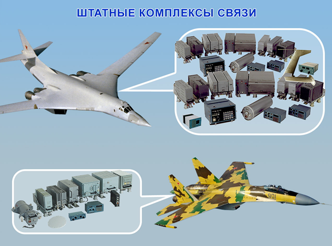
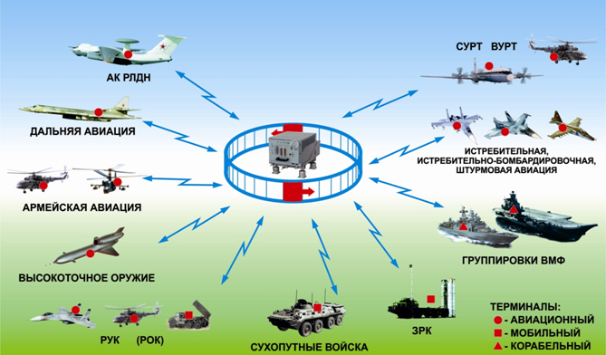

Типовые комплексы связи. Перспективы развития авиационных систем связи.
Типовые комплексы связи
Радиосвязное оборудование используется в качестве «строительного материала» для систем и комплексов связи и в значительной мере определяет их функциональные возможности. Диапазон рабочих частот создаваемой приемопередающей аппаратуры от 3 кГц до 6 ГГц. В настоящее время на летательных аппаратах используются радиостанции четвертого поколения: в ВВС семейство «Крестец», на гражданских — «Арлекин-Д». Радиостанции поколения 4+ «Бозон-2М» — для ВВС и «Ягут» — для гражданской и военно-транспортной авиации соответствуют по основным параметрам мировому уровню, удовлетворяют требованиям государственных стандартов, Единым нормам летной годности, Авиационным правилам и Общим тактическим требованиям ВВС. Идеология их построения полностью соответствует требованиям аппаратурной, информационной и функциональной интеграции бортового оборудования. Основным достоинством радиостанций является возможность перепрограммирования алгоритмов функционирования радиолинии без изменения и доработок конструкции. Радиостанции нового поколения отличают:
унифицированный внутренний интерфейс, что позволяет их модифицировать с минимумом затрат на разработку и подготовку производства;
• наличие встроенных модемов, режим работы которых устанавливается перепрограммированием;
• прямая цифровая обработка сигнала на радиочастоте, увеличение скорости перестройки, расширение функциональных возможностей;
• высокие показатели по надежности, технологичности, помехоустойчивости.
Радиостанции разработаны как изделия двойного применения. Режим передачи данных по протоколам ARINC-635 с адаптацией по частоте, скорости, виду модуляции и кодированию позволяет обеспечить работу в интегральной системе связи, навигации, наблюдения для управления воздушным движением CNS/ATM.
Бортовая авиационная радиостанция ближней связи расширенного МВ-ДМВ диапазона «Бекас» с режимом повышенной помехозащиты позволяет обеспечить межвидовое взаимодействие в тактическом звене управления Вооруженными силами. Для объединенной автоматизированной системы связи обмена данными, навигации и опознавания создан ряд терминалов, работающих в диапазоне дециметровых волн, для установки на самолетах и вертолетах, кораблях, наземных мобильных и стационарных объектах. Терминалы обладают большими функциональными возможностями при работе в сети, обеспечивают обмен речевой информацией, передачу данных в условиях радиоэлектронного противодействия. Одно из направлений дальнейшего развития — «перепрограммируемое радио» (SDR). При этом выбор режима работы осуществляется путем модификации программного обеспечения без изменения аппаратной части изделия. Концепция перепрограммируемого радио реализована в широкодиапазонном модуле связи (ШМС), работающем в диапазоне от 2 до 400 МГц с дальнейшим расширением диапазона до 6 ГГц. Аппаратное и программное обеспечение ШМС позволяет оперативно перестраивать модуль на требуемую частоту и в заданном режиме.

В середине 80-х годов были разработаны штатные типовые комплексы связи для тяжелых (ТКС-1) и легких (ТКС-2) летательных аппаратов ВВС. Применение элементов интеграции радиосвязного оборудования, мультиплексирование сигналов управления и информационного обмена позволили радикально уменьшить суммарную массу и габариты аппаратуры, сократить число органов управления средствами связи. Результатом глубокой модернизации ТКС-2 стал комплекс ТКС-2М. В нем осуществлена замена приемопередающей аппаратуры на изделия новых поколений, реализованы помехозащищенные режимы работы, увеличена мощность передатчиков. В состав комплекса включен авиационный терминал объединенной системы связи, навигации, обмена данными и опознавания. Увеличена степень интеграции оборудования. В основе ТКС-2М — цифровой интегрированный модуль связи, в котором реализована конструктивная и программная интеграция функций ряда устройств.
В результате значительно выросла пропускная способность каналов, сокращено время доставки сообщений в условиях радиоэлектронного противодействия. Масса оборудования снижена в 2,5 раза. Комплексы ТКС-2М устанавливаются на строящиеся летательные аппараты, а также взамен ТКС-2 при модернизации самолетов, находящихся на вооружении. Все это обеспечивает необходимый уровень ТТХ летательных аппаратов по информационному обмену. Сегодня на смену ТКС-2М пришел комплекс связи для истребителя 5-го поколения Т-50, в котором обеспечено дальнейшее наращивание степени интеграции на аппаратном, функциональном и программном уровнях. Дальнейшей перспективой развития штатных комплексов радиосвязного оборудования является переход на интегрированную модульную авионику (ИМА), основными принципами которой являются:
• открытая архитектура;
• модульность;
• единая внутренняя информационная шина.
Открытая архитектура авиационного оборудования реализуется за счет выбора готовых к использованию и сертифицированных по авиационной безопасности аппаратных и программных комплектующих. Модули являются компонентами аппаратного и программного обеспечения и разрабатываются по стандартам открытой архитектуры. Содержание модулей унифицируется за счет разработки открытых спецификаций.

Перспективы развития авиационных систем связи
В настоящее время можно выделить основные направления разработок перспективных
комплексов, средств связи и автоматизации управления:
– расширение функциональных возможностей средств связи и автоматизации управления;
– совершенствование архитектуры автоматизированных систем управления для реализации принципов распределенной обработки данных и ее согласование с общей структурой управления войсками;
стандартизация и унификация оборудования, информационного и программного обеспечения;
– существенное расширение спектра услуг служб связи, особенно по передаче мультимедийной информации;
– использование новых способов цифровой обработки сигналов и методов помехозащиты;
– освоение новых участков диапазонов частот.
Указанные выше направления разработок уже находят свое практическое воплощение в новой технике связи и КСА
В Концепции создания единого информационного пространства Вооруженных Сил Российской Федерации особое внимание уделяется вопросам оптимизации системы управления тактического звена в части, касающейся пересмотра подходов к ее составу и направлениям дальнейшего развития, среди которых:
– разработка унифицированных мобильных средств управления, размещаемых на подвижных объектах;
– создание распределенных (виртуальных) пунктов управления как совокупности рабочих мест функционально взаимосвязанных должностных лиц органов военного управления (вне зависимости от места их расположения);
– создание сетеориентированного пространства сведений, данных и информации и т.д.
В войска Связи ВС РФ в настоящее время широко внедряются подвижные и стационарные станции спутниковой связи нового поколения.